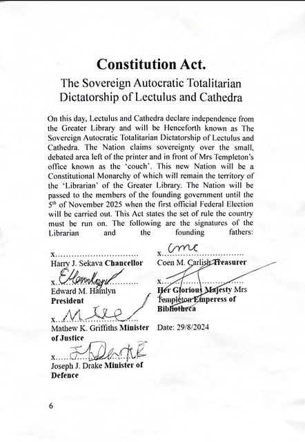

The Sovereign Autocratic Totalitarian Dictatorship of Lectulus and Cathedra is a Constitutional Monarchy that claims sovereignty over the small, debated area left of the printer and in front of Mrs Templeton’s office. It was officially founded on the 29th of August 2024.
The Council is made up of the members of the Executive Government and the Nobility. The Nobility are those who aren’t part of the Executive Government but still can vote on acts of the council with each having one vote. On the 5 of November every year, the public vote for 8 citizens to form the Nobility. They are given a title and awarded land by the monarch for that year. However, by the 5 of November the following year their term of service is up and the public then votes for new members of the Nobility. Any action passed by the nation must be first approved by more than half of the Council members present (excluding the Chancellor and President). The final stage for a bill that has been passed by the Council is achieving approval from the Tribunal (the Monarch and the Chancellor and President). ¬¬¬For a bill to be approved by the Tribunal a simple majority – 2 out of 3 – must be achieved.
On the 5th of November, everyone in the country must vote by secret ballot for 8 people that will form the Nobility for the Next year. The 8 members of the new Nobility will then vote for two amongst them to fill the roles of President and Chancellor before the next year. By the start of the new year the next Government will be sworn for the duration of the year. Both the President and the Chancellor’s term of service is limited to one year. The President is responsible for the economy and as such chooses the Treasurer and the Minister of industry; he/she is the representative for Cathedra. The Chancellor is the representative for Lectulus and is responsible for the Political aspect of the government and appoints the Minister of Defence and the Minister of Justice. The representative for Lectulus and the representative for Cathedra work together with the Monarch to form the Tribunal. The Tribunal is the dual control of the country by the two Provinces which is mitigated by the Monarch. Each elected official may only be in office for one year, however, they can be re-elected to serve at most two years in a row.
If there is a legal battle of any kind (including criminal) the court is presided over by the current Minister of Justice (the judge) with a random selection of five citizens as the jury. The judge must ask the jury for their opinion. The Jury decides if the accused is guilty, and the Minister then must decide the punishment. If the defendant is unhappy with the court’s verdict or new evidence comes to light the defendant may appeal to the Council itself in which case the outcome is determined by a simple majority. New laws may be introduced by the current Minister of Justice and will be passed by the Council.
Lectulus and Cathedra is a multicultural society with migrants coming from many different cultural and religious backgrounds. Lectulus and Cathedra have many common values and principles that unite them. They live by the same laws. Different religions and cultural practices co-exist with the secular legal system of the country. All Lectulus and Cathedrian Citizens have the right to express their culture and beliefs. At the same time everyone is expected to uphold the principles and shared values and freedoms that support Lectulus and Cathedra’s way of life
These shared values include:
On your arrival in Lectulus and Cathedra, you will be dealing with officials from many government services. Officials are bound by strict rules to provide services in a professional and fair manner. Do not offer an official any money, thinking you will get better service by doing so. This is against the law. Offering money or a bribe of any kind may result in criminal action being taken against you.
Lectulus and Cathedra police in Lectulus and Cathedra are employees of the government, helping to keep the peace and promote safety in the community. Both provinces share a police force that is employed by the federal government. The law is universal between both provinces. Police prevent and detect crime, protect life and property and enforce the criminal law. The Lectulus and Cathedra police force is not part of the military. You should not fear the police in Lectulus and Cathedra but remember to respect them and listen to and follow their directions at all times.
Lectulus and Cathedrian laws apply to Lectuluic and Cathedrian citizens and residents. The Lectuluic and Cathedrian justice system is independent of government. If you have any questions about Lectuluic and Cathedrian laws, be sure to ask your caseworker or proposer so they can help you correctly understand how the laws apply to you and your family. One of the reasons laws are in place is to keep you and your family safe. Knowing some basic laws will help you adapt to your new life in Lectulus and Cathedra.
In Lectulus and Cathedra people are equal under the law. All Lectuluics and Cathedrians have the right to be respected and treated in a fair and equitable manner. This applies to employment, education, accommodation, religious freedom (within Lectuluic and Cathedrian laws), buying goods, access to services such as doctors, banks and hotels, and detention or arrest by authorities. No person can be treated differently because of their:

Lectulus and Cathedra’s official or state religion is Vectorism, however, all Lectulus and Cathedrians are free to practice any religion they choose. People can practice religious customs and rituals as long as they are not in conflict with Lectuluic and Cathedrian laws. Religious laws are not recognised in Lectulus and Cathedrian law and have no legal status in Lectulus and Cathedra.
Committing an act of violence against another person is against the law in Lectulus and Cathedra. Assault is a criminal offence and the penalties are severe. It is against the law to be violent towards any person – a man, woman, child or a family member.
There are very strict rules about ownership of firearms and other weapons in Lectulus and Cathedra. People who want to own a firearm must have a licence. Knives are generally considered dangerous weapons and are illegal in public places. The laws and penalties do not differ between the provinces.
In Lectulus and Cathedra, people are free to choose whether to get married. Usually, a person must be over 18 years of age to be legally married. In some circumstances a person over the age of 16 can get married, but this requires a court order. A person who is already married may not marry another person unless they are widowed or legally divorced. Being married to more than one person at the same time is called bigamy or polygamy and can result in imprisonment. Forcing anybody to get married is a serious crime in Lectulus and Cathedra. A person must agree to the marriage without being forced or tricked. An arranged marriage, where both people freely consent to get married, is different to a forced marriage. Arranged marriages are legal in Lectulus and Cathedra. It is illegal to take or send someone to another country for forced marriage or get someone else to organise this. It should also be noted that giving dowries is not a customary practice in Lectulus and Cathedra.
The Legal Age of Consent (the age that the law recognises a person’s right to agree to have sex with another person) is set at a national standard of 16 years of age. This applies to both males and females in both provinces (Lectulus and Cathedra). There are heavy penalties for anyone engaging in sexual activity with a person under the age of consent.
Smoking is banned in many public places in Lectulus and Cathedra, including all airports, government offices, and workplaces. Smoking in restaurants, bars, clubs and shopping centres is also banned. It is also illegal to smoke in cars with children under 18. Non-smoking areas are often, but not always, shown by a sign. It is against the law for anyone to sell tobacco products to a minor (that is, someone under 18 years old). Giving tobacco to a minor is also prohibited within all territories of the nation. Drinking alcohol is legal in Lectulus and Cathedra but only in certain places at certain times. Drinking and selling alcohol is banned in most public areas. It is against the law for any person to sell or supply alcohol to a minor (someone under 18 years of age). It is also against the law for a minor to drink alcohol except on private property such as a private home. Even though it is legal for minors to drink in the home, it is generally considered socially unacceptable for their safety and health.
Although we think of some drugs as being legal and others being illegal, many drugs are somewhere in between. Some substances are legal, but there are laws restricting their use or sale. Others are illegal to use, possess or produce. Importing or bringing drugs into Lectulus and Cathedra is a serious offence and penalties include time in jail. Other offences include having, growing, harvesting, selling or using illegal drugs. There are also laws prohibiting driving while under the influence of drugs and random testing stations managed by the police can legally ask you to pull over while driving to provide a saliva sample for testing. The laws and penalties differ between each state and territory.
Clients must always provide correct information about their family situation and income to government agencies like the Department of the Treasury which includes the Lectuluic and Cathedrian Taxation Office. There are penalties for providing misleading information to government agencies including loss of income support payments and paying money back to the government.
Lectulus and Cathedra have laws to protect the privacy of individuals. All government agencies must prevent the public access of all personal information that is stored, used and collected. Most non-government organisations have a privacy statement that tells people how their personal information may be used. If you feel uncomfortable with the way your personal information has been used you can contact the police force.
Legal Aid is a government funded legal service with offices in each Lectuluic and Cathedrian province. It provides legal representation for those unable to afford a private lawyer, as well as free legal advice and assistance. If you have a legal concern, talk with your caseworker for contact details of your nearest Legal Aid Centre.
The currency and the printing of it is managed by the current Treasurer who is also responsible for any trade with foreign entities. The Minister of Industry is responsible for overseeing the production of goods within the nation. They must act in accordance with the rest of the Executive Government or risk losing their titles.
There are currently two Provinces: Lectulus and Cathedra which are the territory of the current Chancellor and President respectively. In the event of a major Government breakdown – in which the ruling parties have a fall out – the council may vote to split the two Provinces into separate States each governed by their elected official (Chancellor or President). These are the only two provinces and any new territory will be collectively managed by both Provinces (see New Territory). Any conflicts between provinces will be resolved by the Monarch as a third party.
Any new territory gained by either diplomacy or war will be collective territory of both provinces and must be abandoned in the event of a split. Each territory will be given to one of the 8 Nobles as the Territory they are responsible for during their one who contributed to it’s obtention, that person will be awarded a title by the monarch (this is to say that if it is their backyard they are awarded a title e.g. Earl of the Earldom). In the event that we leave school the capital may be moved to a couch in a foreign (outside school) territory.
In the event of a coup (which is illegal if failed), power must be seized by 90% of the population who then will elect a new Chancellor and President. If the Mob is less than 90% of the populace but over 70% the country will split with one official changed.
The Monarch theoretically has the power to appoint and remove anyone from any position of power as well as the right to disband the Council and the Governing body order to rule directly. The Monarch can also exile people from the country by disbanding their passports. However, she and the people are under the agreement that if this power is ever exercised, we will stage a revolution. Her Majesty may also give direct orders to the populace which is a power that will go unquestioned.
There are several holidays set by the state such as:
Holidays may be set by the Tribunal (President, Chancellor and Monarch) at will.
In this nation only elite citizens have the rights listed below, however all citizen are elite citizen. Despite being called a Dictatorship Citizens do indeed possess right including:
Only elite citizens have access to these rights and all the rights that a Australian Citizen possess. Citizenship is handed out to anyone who fills out the paperwork and meets the requirements (the group likes them). Each citizen will be given a passport.
In the unlikely event that the constitution is changed at least 70% of the populace must agree to the new change
The use of brain-rot is strictly restricted to use in political speeches (see the Skibidi Senator). Any use outside of these boundaries will result in the offender being brought before the council and may be punished to the full extent of the law
